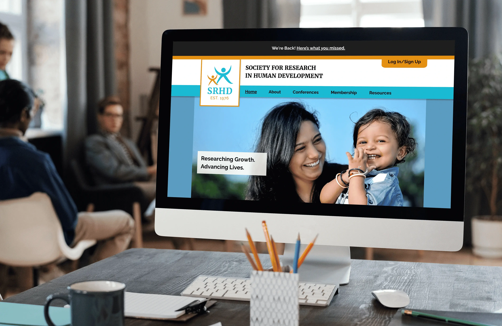
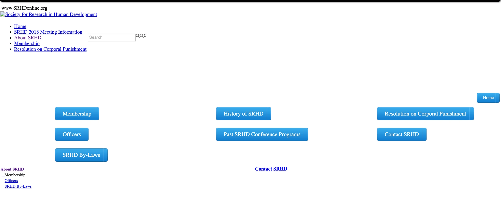
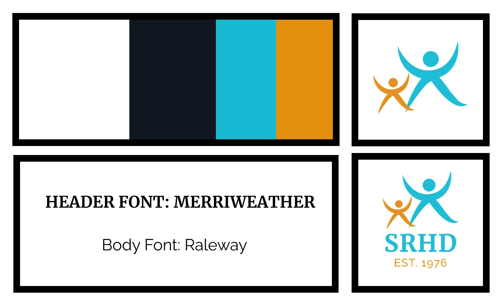
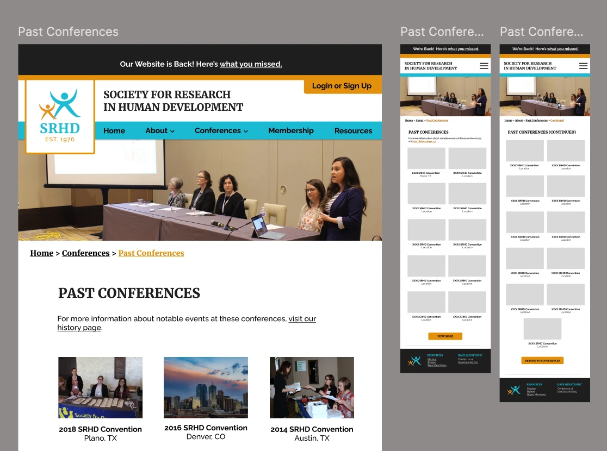
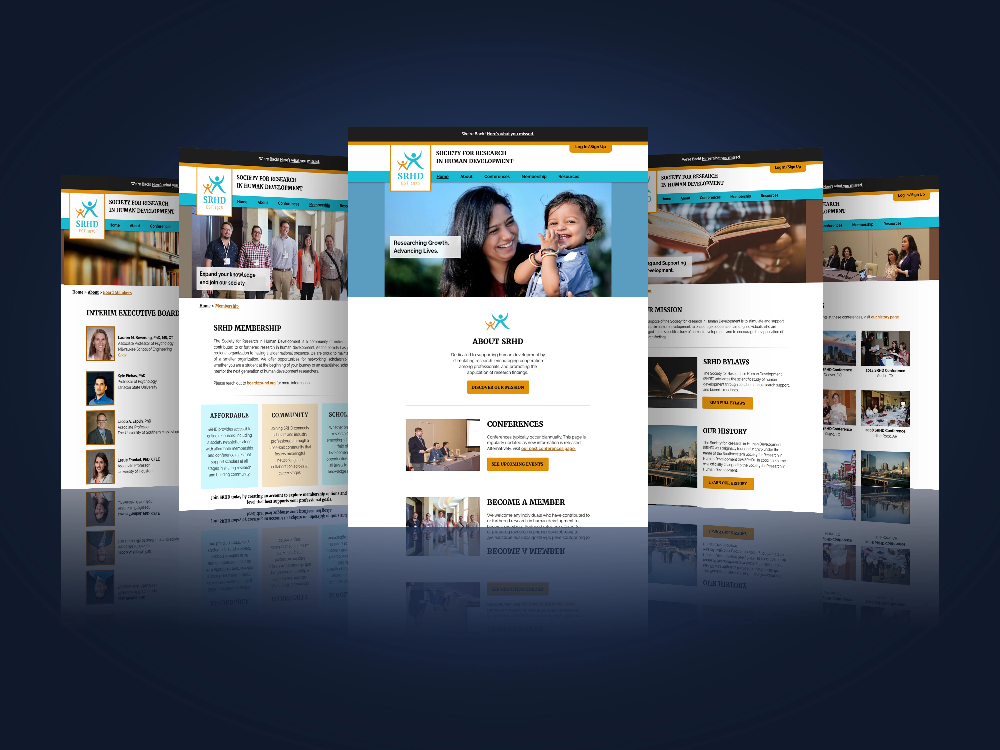

Society for Research In Human Development
Lost Domain to Live Platform: SRHD Website Relaunch
The global pandemic left the Society for Research in Human Development without its members, a website, or even a domain. In an attempt to revive the organization, a professor at my university reached out to me to lead a yearlong UX practicum focused on rebuilding the organization's digital presence.
Recovering and Restarting:
Upon joining the team, I first focused on recovery . I used the Internet Archive's Wayback Machine to crawl prior versions of the site. Unfortunately, my attempts led only to a nearly blank page full of broken links. This cemented the reality that reestablishing the organization meant starting from the ground up . Determined to bring the group back, I began a year-long effort to launch a credible, professional platform designed to reconnect members and attract academics from across the country.

This screenshot reveals all that was left of SRHD's former website. I recovered the limited information I could, and set to work on rebuilding it from the ground up.

A preview of the style guide I created for the SRHD board. I refined the logo's spacing and incorporated stronger typography to create a more cohesive visual identity.
Understanding the Audience:
To understand the mental models of the audience, I reviewed pitfalls, commonalities, and key features across four peer organizations our target demographic already used. After synthesizing the competitor analysis into a set of audience expectations, I moved into branding so SRHD's identity and visual direction could support the experience the site needed to deliver.
Putting the Brand to the Test:
The redesigned logo became
the foundation of the brand,
and I carried its typography and color
palette across website mock-ups.
Simultaneously, I
documented these elements in a style guide
to ensure consistency throughout the project. I
also translated technical decisions into
clear guidance
to support independent maintenance long term.
Using the newly created design system, I
developed a
high fidelity prototype in Figma
that defined the site's
visual structure and user experience.
After its presentation, the
newly formed board of directors
approved website development to
begin.

This screenshot reveals an early look at the high-fidelity wireframes I presented to the SRHD board. I created additional versions to ensure equal access to content across mobile and web interactions.

The rebuilt SRHD website gave the organization a digital home again, helping members reconnect and providing a flexible platform that can adapt to future needs.
Launch and Lasting Impact:
Through this work, I strengthened my
communication and time management skills.
While I assisted the SRHD Board, I
also maintained full-time student
status and worked part-time as a
Marketing Intern. Nonetheless, as
the new year began,
I published the site.
This experience showed me how
thoughtful technical decisions
can support research accessibility
and collaboration. The platform now provides a
space for scholars to
share knowledge and support future research
and discovery across the country.